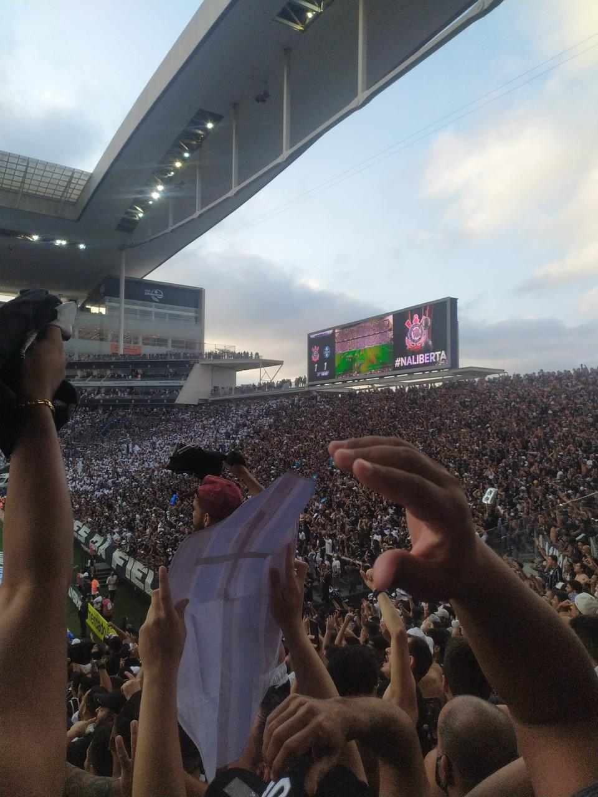

História do timão
Nossa história completa! Dos operários fundadores às conquistas mundiais. Fatos e curiosidades essenciais sobre a trajetória do Timão.
Quiz Fiel

Teste seus conhecimentos sobre o Alvinegro! São 15 perguntas rápidas para provar que você é Fiel de verdade.
Dashboard

Registre os jogos que você foi ver no estádio e veja quantas vitórias, empates e derrotas você presenciou na arquibncada.
Como surgiu minha paixão pelo clube
Nascido e criado em São Paulo, o futebol e o Corinthians sempre fizeram parte da minha vida. Por essa paixão, decidi criar este site. Aqui, você encontrará informações sobre a imensa história do Sport Club Corinthians Paulista, diversas curiosidades e um Quiz para testar seus conhecimentos sobre o Timão.
Desde a infância, o futebol me move. Mas foi quando eu vi o Corinthians pela primeira vez que eu decidi virar torcedor deste clube. Lembro da primeira vez que vi o clube na TV: a sua torcida, a vibração do estádio, a garra que cada jogador apresentava em cada bola disputada. Essa combinação de paixão pelo time e raça fez com que eu ficasse admirado e com que eu me tornasse parte do Bando de Loucos!!!
Conforme fui crescendo, fui conhecendo mais a história do Timão e sua imensa relevância para o futebol brrasileiro. Percebi que ser corinthiano é carregar um legado que vai muito além das quatro linhas. É pertencer a um clube com uma história que luta por igualdade, e referência para a grandeza do futebol brasileiro.
